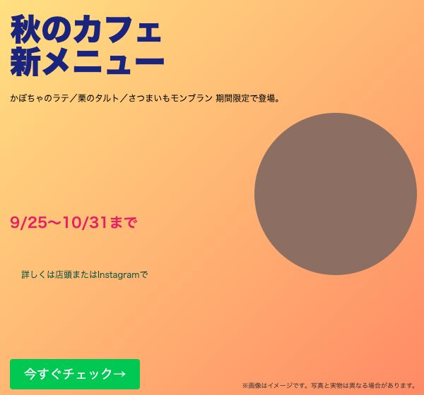

NAVIGATORはるか
カルテに送ると、
実際にこう返ってきます
「ChatGPTと何が違うの？」「実案件で使えるの？」という声にお答えして、カルテに送った相談と、返ってきた返信をそのまま載せました。すべて、はるかが承認する前の"AIの下書き"です（実際の返信は、はるかが読んで直してから届きます）。
制作中のバナーを、そのまま添削
Instagram用に、秋のカフェの新メニュー告知バナー（600×560）を作りました。初めてのバナー案件のテストです。全体がごちゃついている気がするのですが、どこを直せばいいか分かりません。

はるかAIの下書き・約2時間後〇〇さん 秋のカフェ新メニューのバナー、初めての案件でここまで形にできていてすごいです！！🥳✨ キャッチコピーをしっかり大きく置けているのと、CTAボタンまで用意できているのは、もう基本がしっかり押さえられている証拠です。 ここからさらにクオリティアップできるポイントをお伝えしますね。 ①情報の優先順位 日程「9/25〜10/31まで」がピンクで強く主張していて、キャッチコピーと同じくらい目立ってしまっています。キャッチコピー→メニュー名→日程の順で強弱をつけたいので、日程はもう少し落ち着いた色・小さめサイズにしてみましょう。 ②配色 オレンジに加えてネイビー・ピンク・茶色・グリーンと色数が多めです。基本は3〜4色までなので、ピンクの日程をオレンジ系の濃い色に寄せると全体がまとまります🤍 ③写真 丸の中がまだ単色になっているので、かぼちゃラテなど実際の商品写真を入れるとぐっと美味しそうな印象になります。 ④余白 キャッチコピーとメニュー説明文の間、CTAボタン周りの余白を8の倍数（8/16/24pxなど）で揃えると、全体がきれいに見えます。 次の一手は、まず①の強弱調整から手をつけてみてください🙌 できたところまで送ってもらえたら、一緒に見直しましょう。
添削の観点と数値（色は3〜4色まで／余白は8の倍数 など）は、lilisコンサルの添削1,600件超から作った基準に沿っています。急ぎの実案件は「急ぎ」にチェックを入れると、はるかの画面で先頭に並びます。
LPのワイヤーフレームを、文字で組む
ヨガ教室のLPを初めて作ります。ターゲットは30代の働く女性、ゴールは体験レッスンの申込です。どんなセクション構成にすればいいか、ワイヤーフレームを出してほしいです。
はるかAIの下書き〇〇さん ヨガ教室のLP制作、初めてなのにターゲットとゴールまできちんと整理できていて素晴らしいです！！✨ 「30代の働く女性」「体験レッスンの申込」がはっきりしているので、ここから構成を組み立てやすいですよ🤍 LPでよくある型はFV→お悩み→解決→ベネフィット→CTAという流れなので、この案件にも当てはめてみますね（フッター込み）。 ①FV 目的：誰向けの・どんなヨガかを一瞬で伝えて続きを読ませる 要素：ヘッダー→キャッチコピー（最大）→サブコピー→ベネフィット2〜3個→CTAボタン 文言仮：「仕事帰りの30分で、心と体をゆるめる」 ②お悩み 目的：「自分のことだ」と共感してもらう 要素：見出し→お悩み項目3〜4個→人物写真 文言仮：「肩こり・眠れない・自分の時間がない…そんな毎日に」 ③解決策 目的：お悩みの原因と、このヨガ教室で解決できることをつなぐ 要素：見出し→原因→レッスンの特徴→CTA ④ベネフィット 目的：通った後の未来を見せる 要素：見出し→ポイント①②③（同じ型で繰り返す）→CTA 文言仮：「体験後に感じる変化」を3つ ⑤CTA（体験レッスン申込） 目的：申込への後押し 要素：オファー内容→申込ボタン→補足（持ち物・服装など） ⑥フッター 要素：教室情報・お問い合わせ 数値の目安：SPは幅730px（実機365pxの2倍）、セクション上下の余白は50px前後で統一すると整います。 次の一手は、①FVと②お悩みの文章から仮で埋めてみてください🙌 できたら送ってください、一緒に見直しましょう。
DM営業の数が、返信に入る
カルテの「今日の営業ログ」にDM数・応募数・返信数を入れておくと、返信の中で数字ごと見てもらえます。
はるか上の添削の続きあと、DM営業も3日連続でコツコツ続けられてますね、それだけで十分すごいです。返信はまだ0とのことですが、返信率は大体1〜3%が目安なので、今のペースのまま数を重ねていけば大丈夫です。
毎朝8時にカレンダーから「今日の分を記録」と通知が来る設定も、ボタン1つで入れられます。
営業DMの文面を、はるかの型で
Instagramで美容室に営業DMを送りたいです。文面を作ってほしいです。
はるかはるかの営業文の型で作った例突然のご連絡失礼いたします。Webデザイナーの〇〇と申します。 〇〇さんの投稿の世界観がとても素敵で、フォローさせていただきました🌼 いま9月限定で「3名様限定のモニター枠」をご用意しています。 ・投稿しているのに反応が少ない ・価格を毎回DMでやり取りしている ・「予約はどこから？」とよく聞かれる ・HPが欲しいけれど、コストが不安 どれか1つでも当てはまれば、まずはオンラインかお電話で、事業のお話を聞かせてください。 【モニター】とだけご返信いただければOKです◎ 今回ご縁がなければ、スルーしていただいて大丈夫です◎ 無理なご案内や営業はいたしませんので、ご安心ください。 最後までお読みいただき、ありがとうございました🍀
「短く・柔らかく」「いきなり受注前提にしない」「必ず次の行動を入れる」「返信のハードルを下げる」——はるかが受講生に配ってきた営業文の骨格そのままです。
育った内容は「取扱説明書」にして持ち出せる
カルテを書くほど、あなた専用の前提が育ちます。それをボタン1つでコピーして、お使いのChatGPTやClaudeの最初に貼るだけ。
私の取扱説明書見本# 私の取扱説明書（AIラボのカルテより・〇月〇日） ## 私について - 職種：Webデザイナー（lilisコンサル受講生） - いまの悩みの傾向：営業・受注／やり方・入口／じかん・余裕 - 思考のくせ：完璧準備タイプ（全体がわかってから動きたいタイプのようです。その丁寧さは強みです。） ## はるか（案件獲得コンサル）から繰り返し言われていること - まず小さく1歩だけ（4回） - がんばりすぎない（2回） - 相棒はClaude（1回） - 時間を取り戻す（1回） ## 私へのAI活用プラン - おすすめの相棒：Claude - まかせること：提案文・ポートフォリオ - 最初の一歩：気になる案件の募集要項を貼って「私の強みが伝わる提案文のたたき台を」と頼む ## 最近の相談と、もらったアドバイス（原文） - 相談：提案文を書くのに毎回1時間かかって、疲れて応募が止まってしまいます。時間ばかりかかって数が出せません。 - アドバイス：カルテ、読みました。 提案文に1時間かかっているとのこと、そこはAIがいちばん得意なところです。今夜、気になる案件の募集要項をそのまま貼って「私の強みが伝わる提案文のたたき台を作って」と頼んでみてください。5分でたたき台ができます。 あなたの場合、長い文章の下書きが得意なClaudeが合っています。 ## あなた（AI）へのお願い - 上の内容を前提に、私の相談に答えてください - 数字・相場・断定は根拠を添えるか「確認が必要」と言ってください - 提案文や文章は、はるかのアドバイスの基準（相手の悩みを理解して解決する・売り込まない）に沿って直してください
ChatGPTとの違いは、この2つです。
①返信の基準が「はるか（案件獲得コンサルの現場）」であること。②相談するほど、あなたの前提が蓄積されて、どのAIにも持ち出せること。
ここに載せた返信は、テスト用の相談に対してAIが作った下書きです。受講生の実際の相談内容は掲載していません。